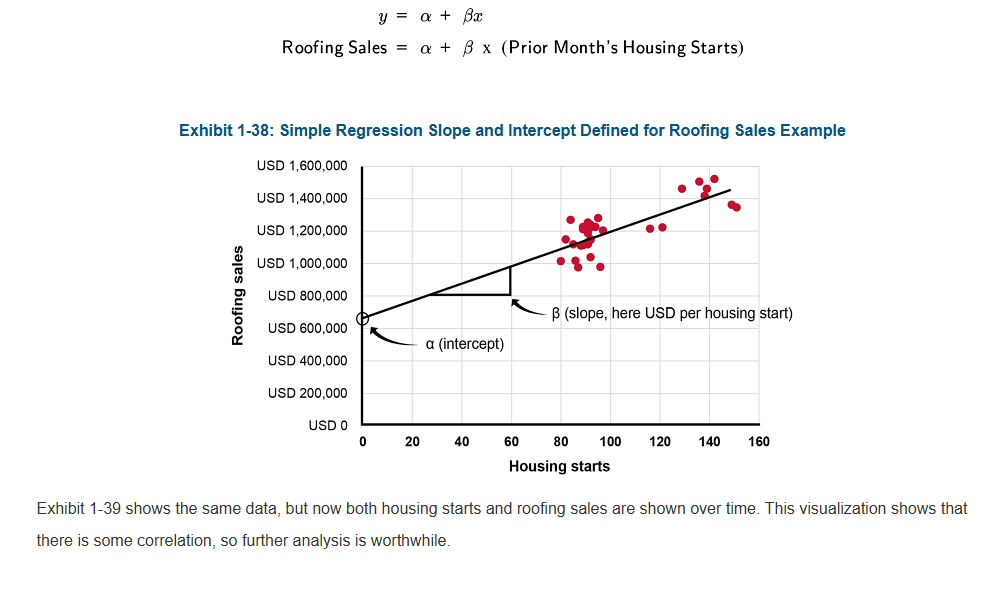

- Forecasting methods can be qualitative (based on experience and judgment), or they can be quantitative (based on historical or publicly available data and calculated).
- Quantitative methods can be a projection of historical data over time, which is called time-series forecasting, or be based on trend indicators such as government data on leading indicators, which is called associative forecasting.
- Various methods can also be combined.
Qualitative and Combination Methods
- Qualitative forecasts rely on judgment rather than math.
- These methods lack scientific precision but can be used on their own in volatile situations or when there are no historical data available, such as for a new product.
- Sometimes a similar product might be used as a proxy, and this possibility should be explored prior to resorting to a pure qualitative forecast.
- Qualitative forecasts depend on the experience level of the forecasters, so results can vary widely.
- This can be true even when a qualitative method is used to adjust a quantitative method.
Bias is a real risk when using qualitative forecasting on its own or after quantitative forecasting. Estimators may be motivated to estimate too high or too low depending on their incentives. For example, a salesperson could estimate too low to make a sales target easy to reach, while a culture of optimism might lead to aggressive sales goals. One way to mitigate bias is to ask estimators to provide a pessimistic estimate, a most likely estimate, and an optimistic estimate. The three estimates can be combined and divided by three (the simple average), or the most likely estimate can be given more weight. A common way is to multiply the most likely result by four (putting four times more weight on this estimate) and then divide the total result by six:

Two common types of qualitative forecasting are judgmental/expert judgment forecasting and the Delphi method.
Judgmental/Expert Judgment Forecasting
Executives, salespersons, market analysts, and others can use their detailed knowledge of their products and their customers, along with their memory of the differences between prior forecasts and actual results, to generate a forecast or, more often, to adjust a quantitative forecast. Tracking these adjustments separately from any quantitative component will help in determining whether these modifications are increasing or decreasing accuracy and in showing whether they are introducing bias by being consistently high or low.
Delphi Method
- A more involved and sophisticated qualitative forecast can be created by surveying experts and collating their responses into a document that keeps the responses anonymous.
- The compiler continues to work toward consensus in successive rounds by highlighting areas where there is disagreement and allowing responders to change their responses after reading the current group opinion.
- Anonymity is used for two reasons.
- First, it helps prevent dominant personalities or emotions from influencing the group opinion, called the “groupthink” effect.
- When the groupthink effect is in play, otherwise independent thinkers might become emotionally committed to an unrealistic forecast.
- The other problem anonymity prevents is a “stake in the ground” mentality.
- This is when a person has already publicly committed to a forecast result and doesn’t want to lose face by changing his or her declared position.
- Since the position is anonymous, it is easier to change given more information.
- This method has had good success at arriving at reliable forecasts, but it is time-consuming and labor-intensive.
- It is often used only for strategic-level estimation.
Combination Methods
- Good forecasting is best done with a combination of quantitative and qualitative considerations.
- For example, a forecaster for an electronics company might use a mathematical model to estimate demand for future periods.
- The forecaster should then modify the projection with all pertinent and available intelligence.
- This could include knowledge of competitor sales promotions or product launches, the state of the economy, trends in discretionary spending, and so on.
- The assumptions used need to be openly discussed so that everyone can arrive at a shared set of assumptions.
- Documenting the assumptions is important for post mortems.
When using combination methods, both the quantitative forecast and the qualitatively adjusted forecast can be measured separately for error to determine the degree to which qualitative methods are helping or hindering forecasting.
Quantitative Methods: Time-Series Forecasting
- Quantitative forecasting uses mathematical formulas to predict future results based on past trends.
- Two basic categories are time-series and associative.
- Time-series forecasting is more commonly used because the methods are less complex mathematically and thus easier to explain to decision makers.
- Time-series methods assume that the factors that influenced the past will continue on into the future.
- When that trend is unlikely to be stable, associative forecasting may be needed.
- There are a number of types of time-series forecasting, ranging from the very simple to the relatively complex.
- Naive forecasting is the simplest; it assumes that the last period’s demand will be this period’s forecast.
- It can be cost-effective but does not account for trends, and any random spike or trough in demand would be carried forward.
- The naive method is not discussed further in this text.
- Other time-series methods include the simple moving average, the weighted moving average, and exponential smoothing.
- We’ll examine these in a moment, but first we’ll look at some of the steps in time-series forecasting.
Visualizing
Visualizing the data is an important part of forecasting because you can often spot seasonality or other trend or cycle information very quickly and decide how best to forecast. Exhibit 1-31 shows some visualized raw data for a product with strong demand in the winter months and very low demand in the summer months.
Exhibit 1-31: Visualize the Raw Data

- In this case, the data for three years were placed in Microsoft ExcelTM and one of the features was used to generate a chart automatically.
- An additional option was selected to automatically calculate the linear trend, shown as the dotted line.
- It is slightly upward-sloping.
- However, the waves are very strong, showing strong seasonality.
- A time-series forecast done during a seasonal upswing would predict this upswing to keep on going upward, while your visual review clearly shows that the upswing will very likely go to a downswing in a predictable manner.
- The seasonality needs to be removed (deseasonalizing) or the results will be of little use.
Deseasonalizing
- The process of deseasonalizing data involves generating a seasonal index.
- Calculating a seasonal index requires several years’ worth of data (for seasonality that occurs over an annual period).
- The data used to create the chart in Exhibit 1-31 are shown in Exhibit 1-32 below along with the calculations required to find the seasonal index.
Exhibit 1-32: Creating a Seasonal Index

If you would like to experiment with an interactive version of the worksheet used as a running example for both time-series forecasting and error calculations, download the “Forecasting Model” spreadsheet from the Resource Center.
The index is calculated as follows, using monthly time buckets with three years of data. (Other time periods and buckets could be used instead.)
- Calculate the month average for each month.
- The month average is the sum of each year’s results for a given month divided by the number of years.
- For example, January results for year 1, year 2, and year 3 are summed and divided by 3 to find the month average of 31 units.
- This is then done for each of the other months.
- Calculate the year average.
- Sum the 12 month averages and divide by 12.
- In the example, this is 168/12 = 14 units.
- This year average is deseasonalized because it averages out the rise and fall in sales.
- Calculate the seasonal index.
- Divide each month average by the year average.
- In Exhibit 1-32, the seasonal index for January is 31/14 = 2.214.
- This is repeated for each other month.
- Note how the months with higher-than-average demand have an index over 1.0 while months with lower-than-average demand have an index of less than 1.0.
The general formula for calculating the seasonal index is

The next step in the deseasonalization process is to apply the seasonal index to the raw data, which will result in deseasonalized data.
- Deseasonalizing data involves dividing the raw data by the seasonal index for the given month.
- Exhibit 1-33 shows this for the year 1, year 2, and year 3 data.
- For example, the January year 1 data of 34 units was divided by 2.214, resulting in 15.35 units.
- The process is repeated for each of the 36 data points.
Exhibit 1-33: Generating Deseasonalized Data

Simple and Weighted Moving Averages, Exponential Smoothing
Once the data are deseasonalized, they are ready for use in forecasting with the simple and weighted moving averages and exponential smoothing.
The simple moving average is the average of demand from several preceding periods. Three- and six-month periods are commonly used. For example, a three-month moving average would be calculated as follows, where M1, M2, and M3 are the three most recent months:

This is a moving average because it is recalculated using the most recent set of months (or other periods), dropping the oldest month and adding the just-ended month to the list.
- The simple moving average can be useful when demand is relatively constant from period to period.
- The method can be used to prevent an overreaction to a random or irregular spike or dip in a given month because it smooths out these variations.
- However, if there is a change in a trend, this method would be slow to respond to it.
- It would lag the trend, in other words, so is best used when a trend is relatively flat.
- Using more periods. such as a six-month moving average, will make the method even less sensitive to random variation by smoothing more, but it would also make it lag a trend more.
- One disadvantage of averaging multiple periods is that data collection and organization can be complex when multiple products in a product family need to be forecasted.
- The weighted moving average (or weighted average) forecasting method places weights on the periods being averaged, usually to put greater emphasis on the more recent periods and relatively less emphasis on the more distant periods.
- Thus it allows trends to have more of an impact on the forecast.
- The weights are usually selected using expert judgment and trial and error.
- While any weighting system can be used, only testing against historical data can prove whether a given set of weights is a better predictor than another set.
When calculating the average, you divide by the sum of the weights rather than the number of periods. For example, if the third month out is given a weight of 1, the second month out a weight of 2, and the most recent month a weight of 3, you would divide this three-month weighted moving average by (1 + 2 + 3) = 6, for example:

Exponential smoothing uses three inputs in its equation: the last period’s forecast, the last period’s demand, and a smoothing constant, a number greater than 0 and less than 1 represented by the Greek letter alpha (α), which is basically a percentage weighting where 1 = 100 percent. One way to calculate exponential smoothing is

- Using this equation produces a weighted average of previous results.
- As you increase α closer to 1.0 or 100 percent, you get closer and closer to a naive forecast, with 1.0 being a naive forecast since it is 100 percent weighted on last period’s demand and 0 percent weighted on the prior period’s forecast.
- A constant of 0.3, on the other hand, would put 30 percent of the weight on the last period’s demand and 70 percent on the last period’s forecast.
- This constant smooths out random or irregular spikes or dips in actual demand by placing more weight on the prior forecast.
- Most organizations select a smoothing constant between 0.05 and 0.5.
- A constant of 0.05 would give minimal weight to the preceding period’s actual demand, while 0.5 would equally weight the actual and forecast results.
- The constant value is selected by experience, trial and error, and testing against historical data.
This method is often used when you want to minimize the lag that exists when trends shift, but, like all time-series models, it cannot eliminate this lag.
- Exhibit 1-34 shows how the simple and weighted moving averages and exponential smoothing would be calculated in a worksheet.
- All of the data shown in the exhibit are still deseasonalized.
- The data would be entered in columns, and formulas would be entered (or dragged down) wherever the numbers are bold.
- The last column in the left-side version shows deseasonalized actual results.
- Also in this version, each month’s forecast would be created as soon as the actuals for the necessary number of periods become available.
Exhibit 1-34: Comparison of Forecasts (Deseasonalized Data)


- The smoothing constant selected for exponential smoothing in this example is 0.3.
- Exponential smoothing cannot be calculated unless the prior period’s actuals are known, but you can use the other forecasting methods to project further into the future.
- To do this, you would substitute forecast data for demand data for those future periods, as is shown in the right-hand version.
Note, however, how the forecast quickly becomes repetitive when forecast data are used in place of actual results; after a few periods, everything is based on forecast data and an average or weighted average of the same three numbers results in the same number. It shows how these methods are less useful the further you go into the future.
- Note that the three methods produce fairly accurate results, but there is some variance from the actual results for all three methods.
- The exponential method seems to do better in most periods, but the actual results of 14.64 units (cell I58) is lower than the predicted 15.64 units (cell E58), which will have an impact on the error for that period.
- However, it bounces back to being more accurate in March because of the 70 percent weight placed on the last period’s forecast.
Reseasonalizing
- Reseasonalizing involves multiplying the deseasonalized data by the given period’s seasonal index to find the seasonalized forecast values.
- In Exhibit 1-35, the deseasonalized data for the moving average (the “Moving Year 4” column) is multiplied by the seasonal index and the resulting forecast in units is shown in the “Moving Average” column (column R).
- For example, the seasonal index of 2.214 for January is multiplied by the moving average January forecast of 13.99, resulting in 30.97 units (which would be rounded up to a forecast of 31 units).
- The weighted average and exponential columns are similarly calculated.
Exhibit 1-35: Comparison of Forecasts (Reseasonalized Data)

- Note the February year 4 actual results—only 29 units were sold.
- While all of the forecasts were high, the exponential forecast was off by the most.
- On the other hand, it returns to low amounts of variance right after that month of irregular demand and otherwise has lower error rates.
- When you are done creating a forecast, it is generally useful to finish by visualizing the data again in chart form.
- You can also use charts to present the forecast to decision makers since they can make your forecast easier to digest.
- Exhibit 1-36 shows a chart with both the raw data and the deseasonalized data and uses dark shading to show a one-year forecast of demand using the three-month moving average method applied to the deseasonalized actual demand (which would become available month by month).
- The resulting forecast is then reseasonalized.
- Note that the deseasonalized data would normally not be shown in a chart at all since it is not useful for making decisions in and of itself.
- It is simply used to produce the reseasonalized forecast for demand planning.
Exhibit 1-36: Deseasonalized and Reseasonalized Data with Forecast

When trends vary too much for these time-series methods to be useful in predicting demand (or anything else being forecasted), associative forecasting can be used.
Service-Sector Forecasting
Some service businesses present special forecasting challenges, since their demand may fluctuate hour by hour rather than on a monthly basis. These rapid changes in demand have significant implications for scheduling and ordering.
- Restaurants, for instance, must take into account variations in amount and type of demand by hour of the day, day of the week, and season of the year.
- They require sophisticated demand planning in more ways than one, since they have to guess right about not only the level of aggregate demand but also the amount of demand for each of the menu items.
- Running out of an item means disappointing some customers; stocking too much of a perishable item means financial losses and waste.
- Computers can be invaluable in tracking point-of-sale data as they occur.
- Before automation, detailed tracking meant keeping a manual log during the day or sorting through receipts.
- Exhibit 1-37 illustrates the forecast for a fast-food restaurant’s demand requirements from lunchtime through dinner.
Exhibit 1-37: Restaurant Demand by Hour of Day

These projections are useful in determining all the capacity requirements of a restaurant—numbers of workers to put on each shift, number of registers to maintain, number of tables, space requirements, and so on—as well as in making decisions about food items to stock.
Quantitative Methods: Associative Forecasting
- Associative forecasting (also called causal, correlation, explanatory, or extrinsic forecasting) uses data gathered from one or more internal or external sources as a predictor of something that is presumed to be correlated.
- The predictor is called the independent variable.
- The element being predicted is called the dependent variable, and it could be demand for a product family or for total organizational sales.
While the time-series method is best for short- or medium-term forecasting, the associative method is best for long-term forecasting, especially at the aggregate level. Part of the reason for this is that these models require larger data sets and generally have higher costs; they use information with predictive value to form a forecast rather than just looking at past results.
- Prior to discussing specific associative methods, let’s look at the distinction between correlation and causation.
- We’ll also examine leading versus lagging indicators, since they are often the predictors used in an associative forecast.
- After that, simple and multiple regression are covered.
Correlation Versus Causation
- Correlation is an observation that the change in an independent variable has a measurable effect on a dependent variable.
- However, just because the effect can be reliably observed over time does not mean that it can be called causation, which occurs when a change in an independent variable directly causes the measurable effect on a dependent variable.
- It could be that some third force is affecting both of them, or the correlation could be a coincidence that would be proven incorrect after a longer period of study.
Leading and Lagging Indicators
- Building permits issued for new production facilities, housing, warehouses, utilities (Building permits imply future construction, and construction leads to other types of production.)
- Initial unemployment insurance claims (Initial claims for unemployment are more dependent upon business conditions than other unemployment metrics.)
- Orders for plant equipment or manufacturers’ orders for durable goods and materials (New orders indicate increased production, which decreases inventory and increases unfilled orders.)
- Changes to the total amount of money in an economy that is available at a specific point in time—the money supply adjusted for inflation (Bank lending typically declines when inflation rises faster than the money supply, and this harms economic expansion.)
- Standard & Poor’s 500 stock index (Investors’ expectations about the economy and interest rates are reflected by changes in the stock prices of the 500 largest U.S. companies.)
- The difference between long- and short-term interest rates (The line that results from plotting, at a certain time, the market interest rates of a financial instrument— for instance, a bond—over a range of maturity dates is called a yield curve. An inverted yield curve indicates that shorter-term yields are higher than longer-term yields, a possible sign of an upcoming recession. Changes to the yield curve usually accurately predict economic swings.)
- The level of consumer optimism about the economy (Consumer expectations often indicate future changes in spending.)
- Lagging indicators are the economic and financial factors that reflect the changes that have already occurred in the economy. They usually confirm a pattern and often provide data or actionable information about six months after the fact and therefore are more reactionary. For example, the unemployment rate is one of the most widely used lagging indicators. Generally, the unemployment rate will fall after a few months of economic growth. If a leading indicator of hours worked is increasing, after a few months the lagging indicator of unemployment should fall.
- Outstanding business and commercial loans (Demand for loans generally peaks about a year after a peak in the overall economy.)
- Comparison of inventory to sales (Increases in inventory usually mean that sales goals were missed, indicating a slowing economy.)
- Changes in company profits (Decreases in profitability have a domino effect often felt by many members of a supply chain.)
- Spending by businesses (Decreases in customer spending, particularly manufacturers’ customers, ultimately result in a downturn in the manufacturers’ business, too.)
- Consumer price index (CPI) (Increases in the prices of consumer-related service products usually occur within the first few months of a recession and taper off at the start of a recovery.)
- Average duration of unemployment (This is the average number of weeks an unemployed person has been out of work.)
- By paying attention to both leading and lagging indicators, a company can reinforce that it is on the right track.
- Remember that chosen predictors need to make sense to decision makers, too.
- It is important to apply common sense when selecting indicators to use as independent variables (predictors). The indicators selected should be easy to measure, objective, pertinent to the strategy, cost-efficient, and embraced by the group whose processes are being analyzed. For example, a roofing shingle company might predict sales of its roofing materials using data on the prior month’s housing starts, total marketing spend, or extreme weather events like hurricanes. These make sense. However, even if data on recent college graduation rates correlate with roofing material sales, they are less likely to be a good predictor. Remember that chosen predictors need to make sense to decision makers, too.
Simple Regression
- Simple regression (also called linear regression) uses a formula to make an association between the dependent variable y (the element being predicted) and the independent variable x (the predictor), with two other elements, alpha and beta.
- Beta (β) is the slope, which is a value used as a multiplier to find the correct placement of the forecast result.
- Alpha (α) is the intercept, which is where the slope intercepts 0 on a chart.
- In the case of the housing starts to roofing sales example, if there were 0 housing starts the prior month, what would roofing sales be?
- That is the intercept.
- These two values can be calculated manually for a data set, but often forecasters calculate them quickly using the free add-on data analysis toolset for Microsoft Excel.
Once you know these values, it is a simple matter of plugging the value for x (e.g., housing starts) into the formula below to find the forecast, y.Exhibit 1-38 shows the prior month’s housing starts against the organization’s total roofing sales and helps to explain how those two variables work.


- So, how do we tell whether there is enough correlation to use this predictor in our sales forecast?
- The statistical term that defines the strength of correlation is called the coefficient of correlation (r).
- Basically, it is a number between –1.0 and +1.0 where
–1.0 is perfect negative correlation: An increase in the predictor causes an equal decrease in the predicted element.
+1.0 is perfect positive correlation: An increase in the predictor causes an equal increase in the predicted element, and a decrease in the predictor causes an equal decrease in the predicted element. (They rise and fall together.)
0.0 is not correlated at all.
- In this example, the value is +0.79, which means that the element is positively correlated.
- Squaring the coefficient of correlation yields the coefficient of determination (also called r-squared or r2).
- The coefficient of determination is a statistical measure between 0.0 and 1.0 of how well a given regression model explains the variation in the data when used to predict an outcome.
- In this case, squaring 0.79 equals 0.6241, so one can say that this predictor explains about 62.41 percent of the change in roofing sales, with the remaining factors being other causes.
- Here we have a strong positive correlation worth pursuing.
- Weaker values below an organizationally determined threshold would indicate that you should find some other predictor.
Multiple Regression
Multiple regression is an extension of simple regression; there are multiple predictive variables rather than just one. For example, one could add marketing spend as another predictor to the roofing sales analysis to see if this increases or decreases the predictive value of the model.
Click card to flip · Use arrows or shuffle to practise